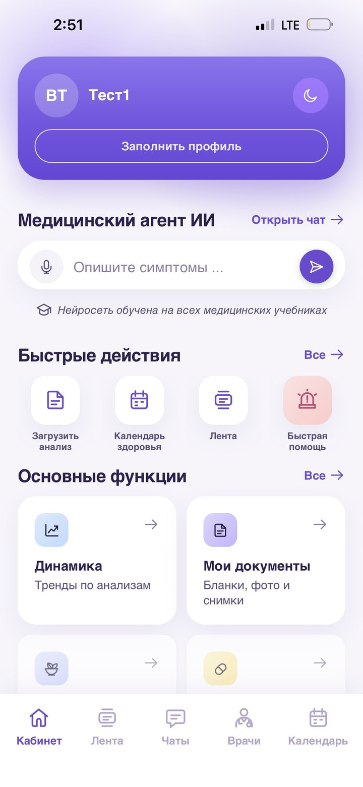

Запись через несколько дней
Ради одного вопроса — запись, очередь и дорога в поликлинику.
Понятный ответ на вопрос о здоровье — сразу. А рядом — ваш врач, который знает вашу историю.

Чтобы спросить врача, нужно записаться, дождаться и доехать. А тревожно — уже сейчас.
Ради одного вопроса — запись, очередь и дорога в поликлинику.
Поисковик выдаёт страшные диагнозы и противоречивые советы.
Сообщение знакомому врачу висит без ответа, писать снова неловко.
Цифры на бланке есть, а что они значат — неясно.
Бланки, снимки и заключения — в разных чатах и папках.
Вы остаётесь один на один со своим вопросом.
Консилиум — приложение, где медицинский ИИ и ваш личный врач работают вместе.
Больше не нужно ждать приёма, чтобы получить ответ на свой вопрос.
Опишите, что беспокоит, или сфотографируйте бланк анализов — понятный ответ придёт сразу.
Выберите врача в приложении — он увидит ваш вопрос и историю.
Врач уточнит детали, объяснит и подскажет, что делать дальше.
Ответы сразу, в любое время
Фото бланка — и понятная расшифровка
Обследования и напоминания
Как меняются анализы со временем
Переписка без записи и очередей
Бланки, фото и снимки в одном месте
Прикрепитесь к своему врачу
Когда нужен ответ на конкретный вопрос
Когда важно быть на связи со своим врачом
Стоимость форматов — в приложении. Медицинский ИИ доступен в любое время.
ИИ помогает быстро разобраться и подготовиться к разговору. Решения принимает ваш врач.
Ответы опираются на медицинские знания, а не на случайные статьи из интернета.
Ваш прикреплённый врач уточнит, объяснит и подскажет, что делать дальше.
Анализы, снимки и переписка сохраняются — врач видит полную картину.
Медицинский ИИ ответит сразу, а ваш врач будет на связи.
Консилиум всегда под рукой — в вашем телефоне.
Понятный ответ — сразу, без записи и очередей.
Разовая консультация на 24 часа или подписка на месяц.
ИИ помогает разобраться, решения принимает врач. Сервис не заменяет экстренную медицинскую помощь (112 / 103).